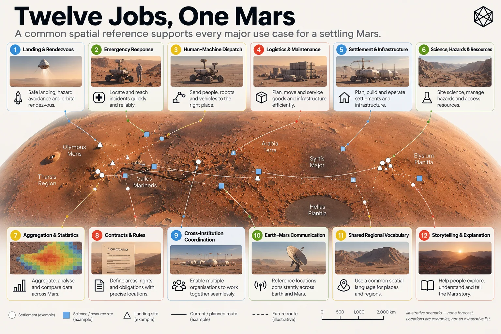

Twelve Jobs for Martian Geography
What Settlement Needs Place to Do
The easiest way to make geography abstract is to discuss it as geography.
So instead, imagine an ordinary working day on founding Mars.
Nothing especially historic happens. No first landing. No constitutional crisis. No discovery of alien life. People and machines simply arrive, travel, repair things, plan construction, analyse data and discover that somebody else’s perfectly reasonable boundary crosses exactly the place where they wanted to put a cable.
That is the sort of day a useful geography has to survive.
Once settlement expands beyond a handful of tightly managed sites, location starts appearing inside almost every operating system. Logistics, emergency response, construction, science, law, administration and ordinary communication all need to describe the same planet, but they do not need the same kind of spatial answer.
That is what makes the twelve jobs useful.
Morning: arrival, accident, response
A cargo vehicle is approaching a settlement.
Its destination is obviously more precise than “Mars”, and even the settlement name is insufficient. The arrival operation may contain several pads, exclusion zones, recovery routes, propellant facilities and assorted expensive objects that everyone would prefer the spacecraft not to encounter unexpectedly.
Coordinates are indispensable for navigation.
The wider operation also needs context: which landing area, which recovery route, which surrounding zone?
That gives us the first job:
1 — Land and rendezvous. Geography should help people and machines identify the correct landing, staging, recovery or meeting area.
The same job exists without spacecraft. Rover crews need meeting points. Convoys assemble before entering a settlement. A damaged surface vehicle diverts to an emergency shelter. In each case the exact position matters, but so does the relationship between that position and the surrounding operation.
A few hours later, a technician is injured outside the settlement.
Now broad context is nowhere near enough. The rescue team needs the relevant few metres of Mars. The location might be beside an access track, underneath a solar array or on completely open ground with no conventional address and no convenient landmark.
That creates the second job:
2 — Emergency exact location. Geography should identify an injured person, stranded crew or failed vehicle precisely enough for somebody else to act.
The location also has to survive a journey through systems: perhaps from a human caller to dispatch software, then to a rescue rover, then to another crew joining the response. The closest vehicle may even belong to a different organisation.
So job three is:
3 — Dispatch humans and machines. Different systems should be able to send people and autonomous equipment to the same destination.
The valuable property here is not identical software. It is consistent meaning when location crosses the boundary between software, organisations and humans.
Three jobs into the day, geography has already had to work at more than one scale.
Maintenance and things that do not exist yet
Elsewhere, a processing plant has stopped because a valve has failed.
The replacement exists. Delivering it to the plant is straightforward enough; delivering it to the correct equipment among hundreds of components spread across a large industrial site can be more interesting.
That gives us the fourth job:
4 — Move and maintain things. Geography should help locate cargo, equipment, caches and infrastructure that somebody needs to install, inspect, repair or recover.
The asset itself will still need an identifier. Geography cannot tell a technician whether the object in front of them is Valve A-142 or Pump B-19.
It can tell them where that object is supposed to be.
That becomes particularly useful after the team that built the infrastructure has moved on. A buried pipe repaired thirty years later should not require the personal notebook of the engineer who described one junction as “the awkward bit behind the ridge”.
Local knowledge is useful. Infrastructure should not depend entirely on it.
By midday another team is planning something that does not exist yet: perhaps a transport and utility corridor between a settlement and an industrial site. There is no road name because there is no road. The proposed routes cross mostly anonymous ground while planners compare gradients, engineering costs, scientific value and future expansion.
So geography gets a fifth job:
5 — Build settlements and infrastructure. People need to describe future development before the things being planned have generated their own names and landmarks.
Roads, utilities, landing areas, tunnels, industrial districts and settlement expansion all require people to discuss areas and routes before construction supplies the vocabulary.
Science and the useful empty places
One proposed route passes close to scientifically valuable terrain.
Perhaps the ground contains a particularly useful exposure of ancient geology. Perhaps contamination would compromise future research. Perhaps the area is dangerous rather than valuable.
The reason changes.
The spatial problem does not.
6 — Science, hazards, resources and protection. Geography should support surveys, resource areas, hazards, restrictions and protected terrain.
These shapes are unlikely to respect convenient civil boundaries. Geology will run diagonally across them. Hazards will follow physical processes. A resource deposit will occupy whatever shape Mars gave it.
The common geography therefore needs to help describe an irregular area without pretending the irregular area should follow the common geography.
The protection belongs to the scientific or operational decision.
The reference underneath provides something stable to describe it against.
Later, another team is examining thousands of location records from the previous year: incidents, equipment failures, cargo movements, energy demand, perhaps population change. Every event has a precise coordinate.
The analyst still needs areas.
7 — Aggregate and compare Mars. Geography should provide stable spatial units against which activity can be counted, grouped and compared.
A cloud of exact points may be excellent raw data while remaining a poor answer to “where are rover failures increasing?” or “which areas are growing faster than emergency coverage?”. Patterns become visible when observations have somewhere consistent to accumulate.
This matters over time too. A twenty-year trend is much easier to interpret when the spatial units underneath the data have not been repeatedly redrawn.
Mars may have relatively few people and an extraordinary number of sensors.
It could need statistical geography surprisingly early.
When the lawyers arrive
Eventually somebody puts a boundary in a contract.
This is usually a reliable sign that civilisation is making progress.
One organisation wants a buried cable across terrain used by another. A landing area requires a safety perimeter. Scientific terrain carries restrictions. A company receives permission to operate within a defined area.
That gives us job eight:
8 — Contracts and rules. Geography should help leases, licences, easements, permissions and restrictions say where they apply.
The final legal boundary may quite properly be a surveyed polygon expressed in coordinates. A common civil geography does not need to replace that precision; it needs to provide stable context around it.
Then comes the argument.
Organisation A thinks one authority has jurisdiction over the corridor. Organisation B thinks another does. Perhaps they disagree about regulation or contractual interpretation. Perhaps future Martian constitutional law has developed all the simplicity and universal agreement for which constitutional law is famous.
They still need to know which ground they are arguing about.
So job nine is:
9 — Coordinate different organisations. Institutions that disagree politically or operationally should still be able to identify the same territory.
A common reference cannot resolve the dispute and should not pretend to. It can do something more modest and more useful: prevent disagreement about authority from requiring a second disagreement about location.
Explain Mars to somebody who is not there
Eventually some part of the day’s activity is discussed on Earth.
The precise coordinates are available. To most people they communicate very little. A nearby crater name might help a specialist, while “on Mars” achieves magnificent simplicity at the cost of almost all geographic information.
That creates job ten:
10 — Mars–Earth shared understanding. Geography should provide useful regional context without forcing everybody to decode raw coordinates.
A Martian resident will know local references that somebody on Earth does not, just as a resident of London can say “south of the river” with more confidence than a first-time visitor. Shared geography should not remove that local knowledge. It should give outsiders enough structure to orient themselves.
Mars also needs language at scales between a precise local address and the entire planet.
Earth is full of such vocabulary. We talk about western Europe, northern Japan, the Midlands or southern California without necessarily invoking exact administrative boundaries. Mars has scientific regional names already, and many will remain useful, but permanent settlement may need systematic ways to describe broad areas even where there is no convenient named physical feature.
So job eleven is:
11 — Provide common geographic vocabulary. Mars needs ways to discuss broad parts of the planet before political and cultural geography have filled every useful scale with familiar names.
The requirement is orientation, not pre-emptive cultural authorship.
A structural region can help people say where something is without insisting that the region is a future country waiting impatiently for its flag.
Geography becomes history
By evening, the day’s activity has become records.
The landing enters a transport archive. The accident becomes part of a safety investigation. The failed valve acquires a maintenance history. The proposed corridor remains in planning files. Scientific restrictions are recorded, and the jurisdictional disagreement begins its inevitable migration into legal correspondence.
Years later, somebody will want to understand what happened.
That creates the final job:
12 — Explain and remember. Geography should help science, history, media, education and ordinary storytelling connect events to place over time.
This requirement may sound less urgent than casualty recovery, but civilisations depend heavily on records that survive the systems which created them. A project-specific site code can be perfectly useful for ten years and become archaeological evidence in thirty. Historical documents become harder to interpret when their geography disappears with the organisation that wrote them.
Stable reference gives records somewhere to stay.
The twelve jobs are therefore:
# | Job | Spatial question |
|---|---|---|
1 | Land and rendezvous | Which landing, staging, recovery or meeting area do we mean? |
2 | Emergency exact location | Exactly where is the casualty, stranded crew or failed vehicle? |
3 | Dispatch humans and machines | Can different systems send people and equipment to the same destination? |
4 | Move and maintain things | Where is the container, valve, array, cache or asset? |
5 | Build settlements and infrastructure | How do we describe development before it has names? |
6 | Science, hazards, resources and protection | Which terrain is being surveyed, restricted, protected or treated as hazardous? |
7 | Aggregate and compare Mars | Against which stable areas do we count activity and compare change? |
8 | Contracts and rules | Where does a lease, licence, restriction or access right apply? |
9 | Coordinate different organisations | Can parties that disagree still identify the same territory? |
10 | Mars–Earth shared understanding | How can outsiders understand the region being discussed? |
11 | Provide common geographic vocabulary | How do we talk about broad areas before political geography supplies them? |
12 | Explain and remember | How can records and stories remain geographically intelligible over time? |
One planet, several scales

Read a description of this illustration
The twelve jobs span land and rendezvous; exact emergency location; dispatch; moving and maintaining assets; building infrastructure; science, hazards and resources; aggregation; contracts; cross-organisation coordination; Earth–Mars communication; shared regional vocabulary; and history.
The important result is not that all twelve problems require the same spatial object.
They plainly do not.
Emergency response needs metres. Regional statistics need areas. Planning needs geography before construction exists. Science and hazards need irregular overlays. Legal systems may require exact polygons. Public communication benefits from broad context. Machines want deterministic identity, while humans need forms they can understand and communicate.
A civilisation therefore needs more than a better coordinate and more than a better address. It needs to move between exact destinations, useful areas and larger geographic context without losing track of the physical Mars underneath.
The twelve jobs have turned a vague ambition into something testable.
They demand several spatial scales.
They demand both human and machine use.
And they demand enough common structure for different systems to mean the same place without requiring those systems to become identical.
Before we decide what that structure looks like, we can now write down what it must achieve.